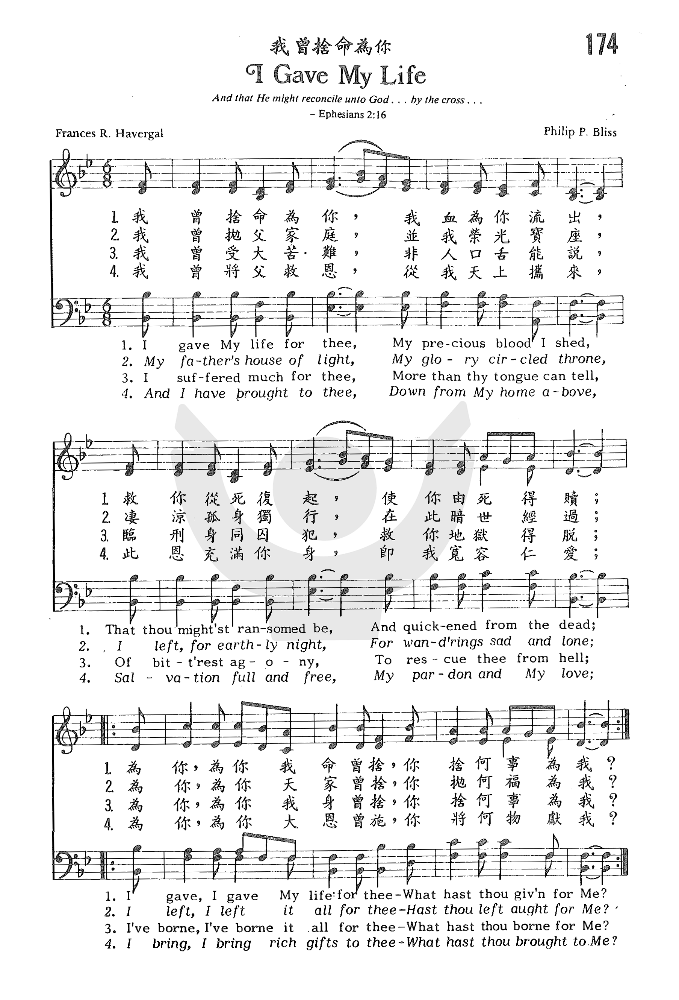

|
|
|
|
1 I gave My life for thee, 2 My Father's house of light, 3 I suffered much for thee, 4 And I have brought to thee,
|
“174p 我曾捨命為你 I GAVE MY LIFE.mp3” by DOW YOUNG. Genre: Other. |
|
https://www.zanmeishige.com/tab/25531.html?songbook=1&index=174
 |
|
|
|
|

https://youtu.be/-MDuHFYf8uM -
I Gave My Life For Thee - A Cappella Hymn https://youtu.be/kQsl5E0wnJY -
https://youtu.be/Wr6413u8lbQ
| Text: | I Gave My Life for Thee |
| Author: | Frances R. Havergal, 1836-1879 |
| Tune: | KENOSIS |
| Composer: | Philip P. Bliss, 1838-1876 |

Notes
I gave My life for thee. Frances M. Havergal. [Christ desiring the entire devotion of His Servants.] Miss M. V. G. Havergal's manuscript account of this hymn is:—
"In F. R. H.'s manuscript copy, she gives this title, 'I did this for thee; what hast thou done for Me?' Motto placed under a picture of our Saviour in the study of a German divine. On Jan. 10, 1858, she had come in weary, and sitting down she read the motto, and the lines of her hymn flashed upon her. She wrote them in pencil on a scrap of paper. Heading them over she thought them so poor that she tossed them on the fire, but they fell out untouched. Showing them some months after to her father, he encouraged her to preserve them, and wrote the tune Baca specially for them. The hymn was printed on a leaflet, 1859, and in Good Words, Feb., 1860. Published also in The Ministry of Song, 1869. Though F. R. H. consented to the alterations in Church Hymns, she thought the original more strictly carried out the idea of the motto, ‘I gave My life for thee, What hast thou done for Me?'" (Havergal manuscript).
Miss F. R. Havergal also refers to this hymn in a letter quoted in her Memoirs, p. 105:—
"I was so overwhelmed on Sunday at hearing three of my hymns touchingly sung in Perry Church, I never before realized the high privilege of writing for the ‘great congregation’ especially when they sang ‘I gave My life for thee' to my father's tune Baca."
The recast of this hymn for the Society for Promoting Christian Knowledge Church Hymns, 1871, referred to above, begins, "Thy life was given for me." The original appeal of Christ to the disciple is thus changed into an address by the disciple to Christ. This recast has not become popular. The original, as in Snepp's Songs of Grace & Glory, 1872, is in extensive use in Great Britain and America.
--John Julian, Dictionary of Hymnology (1907)
Thy life was given for me is a widespread recasting of this text, with an added stanza.
Tune Information
| Title: | [I gave My life for thee] (Bliss) |
| Composer: | P. P. Bliss (1873) |
| Meter: | 6.6.6.6.8.6 |
| Incipit: | 55535 61765 55535 |
| Key: | B♭ Major |
| Copyright: | Public Domain |

救主全捨 I Gave My Life for Thee
我曾捨命為你，我血為你流出，
救你從死復起，使你多罪得贖，
為你、為你，我命曾捨，你捨何事為我？
為你、為你，我命曾捨，你捨何事為我？
我曾離別天庭，我父光明寶座，
撇棄華冕榮形，並受貧苦難過，
為你、為你，天庭曾捨，你捨何福為我？
為你、為你，天庭曾捨，你捨何福為我？
我曾多受艱難，口舌莫名其苦，
使你大得平安，免受上主震怒，
為你、為你，我身曾捨，你忍何辱為我？
為你、為你，我身曾捨，你忍何辱為我？
這首詩是海雯格 （Frances Ridley Havergal, 1836-1879見一月一日）的作品。
1858年海雯格去德國進修，有一次參觀杜塞道夫畫廊（Dusseldorf Art Gallery），看到史敦堡（Sternberg）的名畫 “Ecce
Homo”。 畫面是耶穌頭戴荊棘冠，站在彼拉多及猶太群眾前。 畫下有一行字寫著「我為你捨生命，你為我作甚麼？」
海雯格深受感動，就寫下這首詩，回家後再讀，又感不滿，隨手丟入火爐，但未完全焚毀。
事後她將這首詩給她父親看，他勸她留下並為它譜曲，1859年印成單張，在教會誦唱，大受會眾讚賞。
這首詩有兩個曲調，今日教會常用的是白利士（Philip P. Bliss,見二月廿四日）的曲譜。
每逢唱這首詩歌時，筆者心中總會想到一首葛萊姆（Homer W. Grimes）作的詩歌「我拿甚麼獻給祢」（What
Shall I Give Thee, Master？），其歌詞如下：
我拿甚麼獻給祢
What
Shall I Give Thee, Master？
我拿甚麼獻給祢？祢已為我受死。
我的一切怎能獻一點，豈不應全獻給祢？
我拿甚麼獻給祢？祢曾救贖我靈。
奉獻雖小已是我所有，我願將一切獻呈。
我拿甚麼獻給祢？一切皆祢所賜。
光陰金錢，才幹非我有，凡我所有全屬祢。
（副歌）
耶穌我主我救主，一切為我撇棄，
祢離開天上美家，加略山上受死。
我拿甚麼獻給祢？一切為我撇棄；
我願奉獻不留下一點，完全奉獻給祢。
（可在『YouTube 』上聆聽此歌）
 (請點耳機收聽)
(請點耳機收聽)
唱完這首詩歌，寇克的（S.C.Kirk）的「奉獻上好」（Our Best）在心中響起。它是我數十年事奉的準則，今錄於下，與眾共勉。
奉獻上好
Our Best
請聽救主呼召，「奉獻上好」，處卑微或升高，主必察考；
盡你才力所能，不求酬報，不須求人稱讚，因主知道。
不要等人稱讚，心被動搖，但求父神喜悅，使神歡笑；
凡事求善求真，不作競爭，不論行走思想，當盡所能。
黑夜迅速過去，時日似箭，今日所作之工，主要考驗；
盼望主再來時，永享安寧，主曾應許賜福盡忠僕人。
（副歌）
凡為耶穌所作都蒙福，恩主要人人全力以赴，
我才力雖微小，不足稱道，祇求盡心盡意盡力愛主。
(請點耳機收聽)
中英文聖詩集參考
英文歌名 I
Gave My Life for Thee
頌主新歌 502
頌主新歌(中英雙語) 507
教會聖詩 174
生命聖詩 126
新聖詩 207
歡欣讚美 675
聖徒詩集 297
聖詩 389
讚美 390
頌主聖詩 132
讚美詩(新編) 336
青年聖歌II 84
校園詩歌I 159
英文歌名 Our Best
教會聖詩 295
英文歌名 What
Shall I Give Thee, Master？
生命聖詩 463
"I GAVE MY LIFE FOR THEE"
"He died for all, that they should not henceforeth live unto themselves but unto
Him who died for them" (2 Cor. 5.15).
INTRO.:
A hymn which emphasizes the fact that we can be saved by faith because Jesus died for us is, "I Gave My Life For Thee" (#340 in Hymns for Worship Revised and #649 in Sacred Selections for the Church). The text was written by Frances Ridley Havergal, who was born on Dec. 14, 1836, at Astley in Worcestershire, England, the youngest daughter of William Henry Havergal, himself a well known hymnwriter. For nearly twenty years he devoted his energies to the improvement of church music in England. With his encouragement, Frances began to write verses at age seven and continued to do so for over 35 years, with poems appearing in Good Words and other religious periodicals. In all, she authored more than seven volumes. Her childhood was spent at St. Nicholas in Worcester, where her father had moved after the death of Frances’s mother. They lived there from 1841 to 1860.
Frances began her education at Mrs. Teed’s School in St. Nicholas but was too frail to attend classes regularly, so she studied at home and sporadically while visiting friends abroad in Germany, Wales, Scotland, and Switzerland. Though limited in formal education, she still learned several modern languages, in addition to Hebrew and Greek. In 1858, during a trip to Dusseldorf, Germany, she sat down to rest while touring a local art gallery and saw a painting of Christ on the cross entitled Ecce Homo by Sternberg (some sources say that she saw the painting in a minister’s office). Over the wreath of thorns was written, "This have I done for thee; what hast thou done for Me?" Moved by the painting, she jotted down the motto and used it as a basis for a few lines of poetry when she went home that night, but she felt that the words were so poor that she threw the scrap of paper on the fire.
However, the scrap is said to have been caught by a gust of wind and blown back off the hearth, so she decided to keep it. After returning to England several months later, she showed the poem to her father, and he encouraged her to finish it. This she did in 1859. It was printed that year as a leaflet and in Feb., 1860, in Good Words and was her first successful hymn. Her father retired in 1860, and they moved to Leamington. The tune (Kenosis) was composed for this text by American gospel hymnwriter Philip Paul Bliss (1838-1876). It was dedicated to the Railroad Chapel Sunday School in Chicago, IL, and first appeared in the 1873 Sunshine for Sunday Schools which Bliss edited for John Church and Co. in Cincinnati, OH. Always delicate in health, Frances resided at Caswall Bay, Swansea, in Glamorganshire, Wales, after her father’s death in 1870, and she herself died at age 43 at Oystermouth near Caswall Bay on June 3, 1879.
Among hymnbooks published by members of the Lord’s church during the twentieth century for use in churches of Christ, the song appeared in the 1921 Great Songs of the Church (No. 1, where an altered text began "Thy life was given for me") and the 1937 Great Songs of the Church No. 2 both edited by E. L. Jorgenson; the 1935 Christian Hymns (No. 1), the 1948 Christian Hymns No. 2, and the 1966 Christian Hymns No. 3 all edited by L. O. Sanderson; the 1963 Abiding Hymns edited by Robert C. Welch; and the 1963 Christian Hymnal edited by J. Nelson Slater. Today it may be found in the 1971 Songs of the Church, the 1990 Songs of the Church 21st C. Ed., and the 1994 Songs of Faith and Praise all edited by Alton H. Howard; the 1978/1983 Church Gospel Songs and Hymns edited by V. E. Howard; the 1986 Great Songs Revised edited by Forrest M. McCann; and the 1992 Praise for the Lord edited by John P. Wiegand; in addition to Hymns for Worship, Sacred Selections, and the 2007 Sacred Songs of the Church edited by William D. Jeffcoat.
This hymn reminds us of what Christ did for us.
I. Stanza 1 says that He gave His life for us
"I gave My life for thee, My precious blood I shed,
That Thou mightest ransomed be, And quickened form the dead;
I gave, I gave My life for thee, What hast thou given for Me?"
A. Jesus died for our sins, according to the scriptures: 1 Cor. 15.1-3
B. The reason that He died for us is to demonstrate God’s love: Rom. 5.8
C. The result of His death is that we can have redemption through His blood:
Eph. 1.7
II. Stanza 2 says that in order to do this He left His Father’s house and throne
"My Father’s house of light, My glory circled throne,
I left for earthly night, For wanderings sad and lone;
I left, I left it all for thee, Hast thou left aught for Me?"
A. Jesus, who was God, became flesh: Jn. 1.1, 14
B. He was born of a woman: Gal. 4.4
C. He did this as a sacrifice that He might save us: Phil. 2.5-8
III. Stanza 3 says that while living on earth He suffered agony for us
"I suffered much for thee, More than thy tongue can tell,
Of bitterest agony, To rescue thee from hell;
I’ve borne, I’ve borne it all for thee, What hast thou borne for Me?"
A. Jesus suffered throughout His life, especiallin the garden of Gethsemane:
Matt. 26.36-39
B. The purpose for which He willingly underwent all this suffering was to
rescue us from hell: 1 Tim. 1.15
C. In view of what Christ has borne for us, we need to be willing to bear the
cross for Him: Matt. 16.24
IV. Stanza 4 says that the result of all this is that He brought salvation
"And I have brought to thee, Down from My home above,
Salvation full and free, My pardon and My love;
I bring, I bring rich gifts to thee, What hast thou brought for Me?"
A. The very name of Jesus means salvation: Mt. 1.21
B. He himself recognized that His aim was to seek and save the lost: Lk. 19.10
C. In view of what Jesus has brought to us, we should bring Him our hearts in
humble obedience to His will: Heb. 5.8-9
CONCL.:
"For by grace you have been saved through faith, and that not of yourselves; it is the gift of God" (Eph. 2.8). This is possible because the Man Christ Jesus "gave Himself a ransom for all to be testified in due time" (2 Tim. 2.6). We should ever be thankful that we can have this wonderful salvation by grace through faith and remember that Jesus tells us through His word, "I Gave My Live For Thee."
Frances Ridley Havergal, the "sweet singer and yet strong," was the writer of this and of many other exquisitely beautiful poems and hymns. I think hardly any can read the marvelously interesting story of her life, written by her sister, without feeling how far they themselves fall short of what a Christian can and ought to be. The possibilities of a life wholly yielded to Jesus Christ are great indeed. I pray that we may all be stirred, as we shall hear today of her close following of her King and Saviour, to imitate her life and follow her faith.
I will mention four points that especially impress me in reading her life:
1. Her consecration to Christ.
2. Her devotion to her Saviour.
3. Her love of the Bible.
4. Her habit of Prayer.
1. Her Consecration to Christ. — Her hymn:
"Take my life, and let it be
Consecrated, Lord, to Thee,"
was true of her in every line. Mind, hands, feet, money, influence, love, her very self, were all devoted to the service of her Master and her King. The story of the writing of this hymn is given in her own words. She says: "Perhaps you will be interested to know the origin of 'The Consecration Hymn,' 'Take my Life.' I went for a little visit of five days. There were ten persons in the house, some unconverted and long prayed for; some converted, but not rejoicing Christians. He gave me the prayer: 'Lord give me all in this house!' And He just did. Before I left, everyone had got a blessing. The last night of my visit I was too happy to sleep, and passed most of the night in praise and renewal of my own consecration; and these little couplets formed themselves, and chimed in my heart, one after another, till they finished with 'Ever, ONLY, ALL for Thee."'
Henceforth she sang only for Jesus. All secular songs were laid aside. This was in December, 1873. In August, 1878, she wrote to a friend: "The Lord has shown me another little step, and of course I have taken it with extreme delight. 'Take my silver and my gold,' now means shipping off all my ornaments to the Church Missionary House (including a jewel cabinet that is really fit for a countess), where all will be accepted and disposed of for me. I retain a brooch or two for daily wear, which are memorials of my dear parents, also a locket containing a portrait of my dear niece in Heaven, my Evelyn, and her two rings; but these I redeem, so that the whole value goes to the Church Missionary Society. Nearly fifty articles are being packed up. I don't think I ever packed a box with such pleasure."
Miss Havergal had copies printed of her Consecration Hymn which she gave sometimes at the end of a meeting, asking those who really meant it to sign their names on the blank line at the bottom of the paper, when alone, and on their knees before God, as a pledge of their resolve to be "Ever, only, all for Jesus."
2. Her Devotion to her Saviour. — Her love to the Lord Jesus was a passion, it was so intense and strong. In her love there was the lowliest adoration, and also the highest worship. She says: "There are times when I feel such intensity of love to Jesus that I have not words to express it. I rejoice in Him as my Master and my King, but I want to come nearer still and have His promise in St. John 14:21 fulfilled to me, 'I will love him, and will manifest Myself to him.'"
Her hymns are full of passionate love of the Lord Jesus. What adoration there is in her glorious Advent hymn; and how wonderfully throughout it she adds name to name, to try to express all that the Lord Jesus was to her: "My Saviour!" "My King!" "My glorious Priest!" "My own beloved Lord!" "My Master and my Friend!"
"Thou art coming, O my Saviour!
Thou art coming, O my King!
In Thy beauty all-resplendent,
In Thy glory all transcendent;
Well may we rejoice and sing!
Coming! In the opening east
Herald brightness slowly swells;
Coming! O my glorious Priest,
Hear we not Thy golden bells?Thou art coming, Thou art coming!
We shall meet Thee on Thy way;
We shall see Thee, we shall know Thee,
We shall bless Thee, we shall show Thee
All our hearts could never say!
What an anthem that will be,
Ringing out our love to Thee,
Pouring out our rapture sweet
At Thine own all-glorious feet!Oh, the joy to see Thee reigning,
Thee, my own beloved Lord!
Every tongue Thy name confessing.
Worship, honour, glory, blessing,
Brought to Thee with glad accord!
Thee, my Master and my Friend,
Vindicated and enthroned!
Unto earth's remotest end
Glorified, adored, and owned!"
3. Her Love of the Bible. — God's Holy Word was her constant companion. She "read" it. Her sister says: "At her study table she read her Bible by seven o'clock in the summer, and eight o'clock in winter; her Hebrew Bible, Greek Testament, and lexicons being at hand." She "marked " it. "Sometimes on bitterly cold mornings I begged that she would read with her feet comfortably to the fire, but she would say: 'But then, Marie, I can't rule my lines neatly. Just see what a find I've got. If one only searches, there are such extraordinary things in the Bible!'" In the memoir of her life there are two specimen pages from her Bible — one showing the way in which she underlined and marked the verses; the other is full of notes, the results of her diligent searchings. She "learned" it. She knew by heart the whole of the four Gospels, the Epistles, the Revelation, and all the Psalms. In later years she learned Isaiah and the Minor Prophets.
She was fond of persuading children to commit the Holy Scriptures to memory. Once, to encourage some village children to learn God's Word perfectly, she offered a new Bible to every child who could repeat to her the fifty-third chapter of Isaiah. Good Friday was the day fixed when they were to come. But she was ill then. A few days afterwards she was delighted with the perfect repetition of many of them; and though she would not excuse a single mistake, she gave some another trial. Once she said to her sister: "Marie, it is really very remarkable, how everything I do seems to prosper and flourish. I thought this morning why it was so. I think I have the promise of the First Psalm. You know it says: 'His delight is in the law of the LORD ... and whatsoever he doeth shall prosper.' You know how I do love my Bible more and more; and so, of course, the promise comes true to me."
4. Her Habit of Prayer. — No one ever, I suppose, prayed more earnestly and regularly and systematically than she did. It was her joy to pray "three times a day." She kept a paper in her Bible, on which were arranged the subjects of her prayers.
For Daily Morning Prayer.
Watchfulness. Guard over temper. Consistency. Faithfulness to opportunities. For
the Holy Spirit. For a vivid love to Christ.
Midday Prayer.
Earnestness of spirit in desire, in prayer, and in all work. Faith, hope, love.
Evening Prayer.
Forgiveness. To see my sinfulness in its true light. Growth in grace. Against
morning sleepiness as hindrance to time for prayer.
She also distributed the initials of all her relatives and friends throughout the days; and added various special items of intercession, such as: "That my life may be laid out to the best advantage as to God's glory and others' good. For the Church Missionary Society and Zenana work. For the poor whom I visit. For my Sunday School class. For the servants."
Shall we not resolve to pray more than ever we have done, inspired by this holy and beautiful example? I will name one other matter before I give you, as briefly as I can, a short sketch of her life. Miss Havergal never kept a diary, but in 1879 (the last year of her life) a friend gave her A Journal of Mercies, and in her memoir her entries for the first three months are given. These are some of the mercies for which she gave thanks:
"Able to come downstairs. Sleep. Marie and all her care of me. Opportunities of speaking of Christ. Finding great spoil in the Word. Milder weather. A happy Sunday. Our good maid. Fresh air. Beautiful sunset. Donkeys. Clearer views of Jesus. Preservation from fire. A Gospel sermon at church."
What a happy thing it is to "Praise the Lord and not to forget his benefits":
"Count your blessings, name them one by one,
And it will surprise you what the Lord hath done."
Short Sketch of Her Life
Frances Ridley Havergal was born December 14, 1836, at Astley, Worcestershire [England], at which place her father was Rector. She was a bright, happy, pretty child, and so lively that her father used to call her his "Little Quicksilver." She was passionately fond of music from her babyhood, and sang almost as soon as she could talk. One of her godmothers used to say: "I believe Fanny will die singing," and so she did.
The first sorrow of her life was the death of her mother, when she was eleven years old. She never forgot two remarks made to her by her mother. The one was made when Frances had been given, for the first time, a little bedroom to herself: "Dear child, you have your own little bedroom now. Let it be a little Bethel." She says: "I could not then make head or tail of what mother meant, till some months after, when reading in Genesis I came to the twenty-eighth chapter, and then I understood it." The other words were spoken to her only a few weeks before her mother's death: "Ask God to prepare you for all He is preparing for you." "These words," said Miss Havergal, "have been a life prayer with me." Her great desire, even as a little child, was to be a Christian. She tried and tried, but never felt any different.
When she was fourteen, she went to school to a Mrs. Teed, under whose prayerful and loving influence her religious desires were deepened and strengthened; but it was not until a year later that she first experienced real faith in Jesus as her Saviour. During a visit at Okehampton to the one who afterwards became her "second mother" (as she loved to call her), she was enabled to trust the Lord Jesus, and earth and heaven were bright from that moment. She tells the story herself: "I was sitting on the sofa alone with Miss Cooke, and I told her how I longed to know that I was forgiven. She said: 'Do you desire it above everything else?' I said 'I do.' She paused and then said slowly: 'Then, Fanny, I think — I am sure, it will not be long before your wish is granted.' After a few more words she said: 'Why cannot you trust yourself to your Saviour now? If you saw Jesus coming in the clouds of Heaven, and heard Him call you, could not you trust Him then?' 'I could, surely,' was my reply; and running to my room, I fell on my knees and committed my soul to Jesus. I could and I did trust myself to the Saviour for all eternity, and peace and joy flowed in."
In July, 1854, when she was eighteen, she was confirmed in Worcester Cathedral. The service was a great blessing and help to her. In her manuscript book of poems she wrote:
Thine for Ever."
"Oh! Thine for ever, what a blessed thing
To be for ever His Who died for me!
My Saviour, all my life Thy praise I'll sing,
Nor cease my song throughout eternity."
In the Cathedral, July 17, 1854.
It is impossible, in the short time we have, to tell you anything of her busy life. Brain, hands, feet, all were used for the Master. She spoke, she taught, she sang, she visited, she prayed, she wrote for Him, at home and abroad, and most marvelously was she used. This glad and strenuous labour was broken into at times by seasons of sickness and pain, but in suffering, as in works, she was ever ready to do God's will.
Before saying a few words about the last days of her beautiful life, I will read what I think is the most perfect hymn she ever wrote. It tells the story of her secret life, a life lived in vital union with the Lord Jesus. A life lived IN HIM, and therefore bringing forth "much fruit."
In the original manuscript it is headed "A Worker's Prayer." "None of us liveth to himself" (Rom. 14:7).
"Lord, speak to me that I may speak
In living echoes of Thy tone;
As Thou hast sought, so let me seek
Thy erring children lost and loneO lead me, Lord, that I may lead
The wandering and the wavering feet;
O feed me, Lord, that I may feed
Thy hungering ones with manna sweet.O strengthen me, that while I stand
Firm on the Rock, and strong in Thee,
I may stretch out a loving hand
To wrestlers with the troubled sea.O teach me, Lord, that I may teach
The precious things Thou dost impart;
And wing my words, that they may reach
The hidden depths of many a heart.O give Thine own sweet rest to me,
That I may speak with soothing power
A word in season, as from Thee
To weary ones in needful hour.O fill me with Thy fulness, Lord,
Until my very heart o'erflow
In kindling thought, and glowing word,
Thy love to tell, Thy praise to show.O use me, Lord, use even me,
Just as Thou wilt, and when, and where;
Until Thy blessed Face I see,
Thy rest, Thy joy, Thy glory share."
Miss Havergal was only forty-two when she died at Caswell Bay, Swansea, on June 3, 1879. I will turn to the end of her memoir, and tell you a few of the beautiful words she said before she passed away. At the beginning of her illness she rather astonished her doctor by saying, "Do you think I've a chance of going?" He told her he did not think she was seriously ill. Later when he told her that the inflammation was increasing, she said: "I thought so, but if I am going, it is too good to be true!"
Another time she said: "Ever since I trusted Jesus altogether, I have been so happy. I cannot tell you how lovely, how precious He is to me." She asked for the hymn, "How Sweet the Name of Jesus Sounds," and at the beginning of her illness had her own text hung up close to her bed, where she could see it constantly: "The Blood of Jesus Christ His Son cleanseth us from all sin." She chose this text to be placed on her coffin, around and underneath her name; the word from heaven, under the shelter of which she could peacefully, yea triumphantly, fall asleep. This text was also put on her grave-stone.
Amongst her last utterances were these: "Not one thing hath failed; tell them all round. Trust Jesus; it is simply trusting Jesus. Spite of the breakers, not a fear! I am just waiting for Jesus to take me in. How splendid to be so near the gates of Heaven. I have an intense craving for the music of Heaven." Again and again she murmured: "So beautiful to go! So beautiful to go!" Her last effort was to sing. Her sister Ellen repeated the first verse of the hymn:
"Jesus I will trust Thee,
Trust Thee with my soul;
Guilty, lost, and helpless,
Thou hast made me whole:
There is none in Heaven,
Or on earth like Thee;
Thou hast died for sinners,
Therefore, Lord, for me!
To their surprise she began to sing it to her own tune "Hermas," and sang the verse clearly, though faintly, right through. Then another attack of suffering compelled her to cease. It was the beginning of the end. When it was over she folded her hands on her breast, saying, "Blessed rest." After a few moments she tried again to sing, but after one sweet high note, "He," her voice failed, and, as her brother commended her soul into her Redeemer's hand, she passed away to Him, Who was all her salvation and her desire. "So beautiful to go!"
"'So beautiful to go!' yea, it will be 'far better'!
'Twas always better far to bow to Thy sweet will;
And I have trusted, Saviour, to the very letter
Thy well-tried promises—am dying, trusting still!'And thus she passed away—so beautiful in dying,
As she had been in living—grand in simple faith.
Her watchword, 'Trust Him,' tells the secret underlying
Her fragrant life of beauty, her victorious death.'So beautiful!' And now she, being dead, yet speaketh!
Her songs of faith and hope shall never, never die!
And even by her last, sweet, lifelike words she seeketh
To prove that simple trust will our last foe defy!Then be it ours to garner, as a peerless treasure,
Those living words that such a vital courage show;
Ever to trust in Jesus—love Him without measure;
Then, too, our song shall be, 'How beautiful to go!'"
E. C. Wrenford.
Before we sing our hymn, "I gave My Life for Thee," I will tell you its story.
Miss Havergal was staying in the house of a pastor in Germany. In his study there was a picture of the crucified Saviour; underneath which was the motto: "I did this for thee. What hast thou done for me?" It was January 10, 1858. She had come in weary, and sitting down before the picture the Saviour's eyes seemed to rest upon her. She read the words, and the lines of her hymn flashed upon her. She wrote them in pencil on a scrap of paper. Looking them over, she thought them so poor that she tossed them into the stove, but they fell out untouched. Some months after she showed them to her father, who encouraged her to preserve them and wrote the tune "Baca" specially for them.
We have not time to speak in detail of this hymn. By some it has been thought to be the best of all her hymns. I would beg you, each one, to listen to the appeal as I read the lines, as coming to you from the suffering Christ Himself. "I did all this for thee what hast thou done for Me?"
"I gave My Life for thee,
My precious blood I shed
That thou might'st ransomed be,
And quickened from the dead.
I gave My life for thee:
What hast thou given for Me?I spent long years for thee,
In weariness and woe,
That an eternity
Of joy thou mightest know.
I spent long years for thee:
Hast thou spent one for Me?My Father's home of light,
My rainbow circled throne,
I left, for earthly night,
For wanderings sad and lone.
I left it all for thee:
Hast thou left aught for Me?I suffered much for thee;
More than thy tongue may tell
Of bitterest agony,
To rescue thee from hell.
I suffered much for thee:
What canst thou bear for Me?And I have brought to thee,
Down from My home above,
Salvation full and free,
My pardon, and My love.
Great gifts I brought to thee:
What hast thou brought to Me?Oh let thy life be given
Thy years for Him be spent,
World-fetters all be riven,
And joy with suffering blent.
Bring thou thy worthless all:
Follow thy Saviour's call."
From Bright Talks on Favourite Hymns... by J. M. K. London: The Religious Tract Society; Chicago: John C. Winston Co., [1916?].